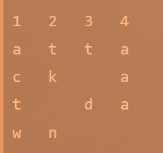

Cryptography
Cryptography is the process of hiding or coding information so that only the person a message was intended for can read it. The art of cryptography has been used to code messages for thousands of years and continues to be used in bank cards, computer passwords, and ecommerce.
Modern cryptography techniques include algorithms and ciphers that enable the encryption and decryption of information, such as 128-bit and 256-bit encryption keys. Modern ciphers, such as the Advanced Encryption Standard (AES), are considered virtually unbreakable.
A common cryptography definition is the practice of coding information to ensure only the person that a message was written for can read and process the information. This cybersecurity practice, also known as cryptology, combines various disciplines like computer science, engineering, and mathematics to create complex codes that hide the true meaning of a message. Cryptography uses algorithms and mathematical concepts to transform messages into difficult-to-decipher codes through techniques like cryptographic keys and digital signing to protect data privacy, credit card transactions, email, and web browsing.
Types of Cryptographic Algorithms
There are many types of cryptographic algorithms available. They vary in complexity and security, depending on the type of communication and the sensitivity of the information being shared.
- Secret Key Cryptography : Secret key cryptography, also known as symmetric encryption, uses a single key to encrypt and decrypt a message. The sender encrypts the plaintext message using the key and sends it to the recipient who then uses the same key to decrypt it and unlock the original plaintext message.
- Stream Ciphers : Stream ciphers work on a single bit or byte at any time and constantly change the key using feedback mechanisms. A self-synchronizing stream cipher ensures the decryption process stays in sync with the encryption process by recognizing where it sits in the bit keystream. A synchronous stream cipher generates the keystream independently of the message stream and generates the same keystream function at both the sender and the receiver.
- Block Ciphers : Block ciphers encrypt one block of fixed-size data at a time. It will always encrypt a plaintext data block to the same ciphertext when the same key is used. A good example of this is the Feistel cipher, which uses elements of key expansion, permutation, and substitution to create vast confusion and diffusion in the cipher. The stages of encryption and decryption are similar if not identical, which means reversing the key reduces the code size and circuitry required for implementing the cipher in a piece of software or hardware.
- Public Key Cryptography : Public key cryptography (PKC), or asymmetric cryptography, uses mathematical functions to create codes that are exceptionally difficult to crack. It enables people to communicate securely over a nonsecure communications channel without the need for a secret key. For example, proxy reencryption enables a proxy entity to reencrypt data from one public key to another without requiring access to the plaintext or private keys.
Ceaser cipher
The Caesar cipher is a classic encryption method. It works by shifting the characters by a certain amount. For example, if we choose a shift of 3, A will become D and E will become H.
The following text has been encrypted using a 23 shift.
‹THE QUICK BROWN FOX JUMPS OVER THE LAZY DOG ›
‹QEB NRFZH YOLTK CLU GRJMP LSBO QEB IXWV ALD ›
Monoalphabetic Subs
A monoalphabetic substitution cipher, also known as a simple substitution cipher, relies on a fixed replacement structure. That is, the substitution is fixed for each letter of the alphabet. Thus, if "a" is encrypted to "R", then every time we see the letter "a" in the plaintext, we replace it with the letter "R" in the ciphertext.
A simple example is where each letter is encrypted as the next letter in the alphabet: "a simple message" becomes "B TJNQMF NFTTBHF". In general, when performing a simple substitution manually, it is easiest to generate the ciphertext alphabet first, and encrypt by comparing this to the plaintext alphabet. The table below shows how one might choose to, and we will, lay them out for this example.
For example, let us take a simple mathematical expression c = a + b. Here, the values of a, b, c are not known. To compute the value of c, different persons can give different values of a and b. As their values are not fixed, they are called variables.

Hill cipher
Hill cipher is a polygraphic substitution cipher based on linear algebra.Each letter is represented by a number modulo 26. Often the simple scheme A = 0, B = 1, …, Z = 25 is used, but this is not an essential feature of the cipher. To encrypt a message, each block of n letters (considered as an n-component vector) is multiplied by an invertible n × n matrix, against modulus 26. To decrypt the message, each block is multiplied by the inverse of the matrix used for encryption. The matrix used for encryption is the cipher key, and it should be chosen randomly from the set of invertible n × n matrices (modulo 26).
1️⃣ Encryption
We have to encrypt the message ‘ACT’ (n=3).The key is ‘GYBNQKURP’ which can be written as the nxn matrix:
The message ‘ACT’ is written as vector:

The enciphered vector is given as:
which corresponds to ciphertext of ‘POH’
2️⃣ Decryption
To decrypt the message, we turn the ciphertext back into a vector, then simply multiply by the inverse matrix of the key matrix (IFKVIVVMI in letters).The inverse of the matrix used in the previous example is:

For the previous Ciphertext ‘POH’:
which gives us back ‘ACT’. Assume that all the alphabets are in upper case. Below is the the implementation of the above idea for n=3.
Playfair Cipher
Playfair cipher is an encryption algorithm to encrypt or encode a message. It is the same as a traditional cipher. The only difference is that it encrypts a digraph (a pair of two letters) instead of a single letter.
It initially creates a key-table of 5*5 matrix. The matrix contains alphabets that act as the key for encryption of the plaintext. Note that any alphabet should not be repeated. Another point to note that there are 26 alphabets and we have only 25 blocks to put a letter inside it. Therefore, one letter is excess so, a letter will be omitted (usually J) from the matrix. Nevertheless, the plaintext contains J, then J is replaced by I. It means treat I and J as the same letter, accordingly.
Since Playfair cipher encrypts the message digraph by digraph. Therefore, the Playfair cipher is an example of a digraph substitution cipher.
- First, split the plaintext into digraphs (pair of two letters). If the plaintext has the odd number of letters, append the letter Z at the end of the plaintext. It makes the plaintext of even For example, the plaintext MANGO has five letters. So, it is not possible to make a digraph. Since, we will append a letter Z at the end of the plaintext, i.e. MANGOZ.
- After that, break the plaintext into digraphs (pair of two letters). If any letter appears twice (side by side), put X at the place of the second occurrence. Suppose, the plaintext is COMMUNICATE then its digraph becomes CO MX MU NI CA TE. Similarly, the digraph for the plaintext JAZZ will be JA ZX ZX, and for plaintext GREET, the digraph will be GR EX ET.
- To determine the cipher (encryption) text, first, build a 5*5 key-matrix or key-table and filled it with the letters of alphabets, as directed below:
1️⃣ Encryption
➡Encryption We have to generate a 5 × 5 matrix from the key as
➡Split the plaintext in digraphs(pair of two). If there is an odd number of letters, a Z is added to the last letter. Pair cannot be made with same letter. Break the letter in single and add a bogus letter to the previous letter.
➡Now, we need to follow the rules for encrypting and do as follows:
➡So we will get the encrypted text as gatlmzclrqtx.
2️⃣ Decryption
➡We have to generate a 5 × 5 matrix from the key as
➡We need to split the ciphertext as done for plaintext while encrypting
➡For the previous Cipher Text gatlmzclrqtx, by following the rules we get:
➡So we will get the encrypted text as instrumentsz.
Vigenere Cipher
The vigenere cipher is an algorithm that is used to encrypting and decrypting the text. The vigenere cipher is an algorithm of encrypting an alphabetic text that uses a series of interwoven caesar ciphers. It is based on a keyword's letters. It is an example of a polyalphabetic substitution cipher.
➡ When the vigenere table is given, the encryption and decryption are done using the vigenere table (26 * 26 matrix) in this method.
Example
Suppose we wish to encrypt the plaintext message : THE SUN AND THE MAN IN THE MOON , using the keyword KING.
Begin by writing the keyword, repeated as many times as necessary, above the plaintext message. To derive the ciphertext using the table above, for each letter in the plaintext, find the intersection of the row given by the corresponding keyword letter and the column given by the plaintext letter itself to pick out the ciphertext letter.
Keyword: KIN GKI NGK ING KIN GK ING KING
Plaintext: THE SUN AND THE MAN IN THE MOON
Ciphertext: DPR YEV NTN BUK WIA OX BUK WWBT
To decrypt the text, find the cipher alphabet in the row of the keyword letter, then see the column of the cipher alphabet.
To decrypt the text:
Begin by writing the keyword, repeated as many times as necessary, above the plaintext message. To derive the ciphertext using the table above, for each letter in the plaintext, find the intersection of the row given by the corresponding keyword letter and the column given by the plaintext letter itself to pick out the ciphertext letter.
Keyword: KIN GKI NGK ING KIN GK ING KING
Ciphertext: DPR YEV NTN BUK WIA OX BUK WWBT
Plaintext: THE SUN AND THE MAN IN THE MOON
Transposition Cipher
Transposition Cipher is a cryptographic algorithm where the order of alphabets in the plaintext is rearranged to form a cipher text. In this process, the actual plain text alphabets are not included.
Example
A simple example for a transposition cipher is columnar transposition cipher where each character in the plain text is written horizontally with specified alphabet width. The cipher is written vertically, which creates an entirely different cipher text.
For example, let’s say the plaintext is “attack at dawn” and the key is 4. The plaintext, in that case, is written in a table like the following:
Please note that the table is a 4×4 table and the length of the plaintext is 14. So, the last two places in the table can be filled with spaces or nulls.
The table is then read column-wise to get the ciphertext. The ciphertext, in this case, is:
In the above example, we used an integer as the key. But, the key can be a word also. For example, we can use the key “road”. The length of the key is 4. So, each row of the table will contain 4 letters. But, after writing the table, the columns are read as per the letters in the key. In our example, if the letters of the word ‘road’ is written alphabetically, then ‘a’ comes first, ‘d’ comes next, then ‘o’ and ‘r’ come. In other words, ‘a’ can be represented with ‘1’, ‘d’ with ‘2’, ‘o’ with ‘3’ and ‘r’ with ‘4’. So, the key ‘road’ now becomes 4312.
Thus, while generating the ciphertext, the fourth column is read first, then the third, first and second columns are read respectively. So, the ciphertext now becomes
A double transposition cipher is more complex. In that case, we firstly generate a ciphertext using the above method and then, the ciphertext is again encrypted with the same key or with a different key.
For example, in the above example, the ciphertext is ‘aaa t d actwtk n’ We can again encrypt this text
Rail Fence Cipher
The railfence cipher is an easy to apply transposition cipher that jumbles up the order of the letters of a message in a quick convenient way. It also has the security of a key to make it a little bit harder to break.
The Rail Fence cipher works by writing your message on alternate lines across the page, and then reading off each line in turn. For example, the plaintext "defend the east wall" is written as shown below, with all spaces removed.
PictureThe simplest Rail Fence Cipher, where each letter is written in a zigzag pattern across the page. The ciphertext is then read off by writing the top row first, followed by the bottom row, to get "DFNTEATALEEDHESWL".
Encryption
To encrypt a message using the Rail Fence Cipher, you have to write your message in zigzag lines across the page, and then read off each row. Firstly, you need to have a key, which for this cipher is the number of rows you are going to have. You then start writing the letters of the plaintext diagonally down to the right until you reach the number of rows specified by the key. You then bounce back up diagonally until you hit the first row again. This continues until the end of the plaintext.
Note that at the end of the message we have inserted two "X"s. These are called nulls, and act as placeholders. We do this to make the message fit neatly in to the grid (so that there are the same number of letters on the top row, as on the bottom row. Although not necessary, it makes the decryption process a lot easier if the message has this layout.
The ciphertext is read off row by row to get "DNETLEEDHESWLXFTAAX".
Decryption
The decryption process for the Rail Fence Cipher involves reconstructing the diagonal grid used to encrypt the message. We start writing the message, but leaving a dash in place of the spaces yet to be occupied. Gradually, you can replace all the dashes with the corresponding letters, and read off the plaintext from the table.
We start by making a grid with as many rows as the key is, and as many columns as the length of the ciphertext. We then place the first letter in the top left square, and dashes diagonally downwards where the letters will be. When we get back to the top row, we place the next letter in the ciphertext. Continue like this across the row, and start the next row when you reach the end.
For example, if you receive the ciphertext "TEKOOHRACIRMNREATANFTETYTGHH", encrypted with a key of 4, you start by placing the "T" in the first square. You then dash the diagonal down spaces until you get back to the top row, and place the "E" here. Continuing to fill the top row you get the pattern below.
Stream Cipher
A stream cipher is a method of encrypting text (to produce ciphertext) in which a cryptographic key and algorithm are applied to each binary digit in a data stream, one bit at a time. The main alternative method to stream cipher is, in fact, the block cipher, where a key and algorithm are applied to blocks of data rather than individual bits in a stream.
Steps
- For encryption, plain text and keystream are required.
- The plain text and keystream produce ciphertext using XOR Operation.
- Plain text is XOR’ed with keystream bit by bit to produce CipherText.
Example
Plain Text: 10011001
Keystream: 11000011
—————————————————————
Ciphertext: 01011010
Decryption
Steps
- For decryption, ciphertext and the same keystream are required which was used for encryption.
- The ciphertext and the keystream produce plain text using XOR Operation.
- The ciphertext is XOR’ed with keystream bit by bit to produce PlainText.
Example
Ciphertext: 01011010
Keystream: 11000011
—————————————————————
Plain Text: 10011001
Block Cipher
A block cipher takes a block of plaintext bits and generates a block of ciphertext bits, generally of same size. The size of block is fixed in the given scheme. The choice of block size does not directly affect to the strength of encryption scheme. The strength of cipher depends up on the key length
There is a vast number of block ciphers schemes that are in use. Many of them are publically known. Most popular and prominent block ciphers are listed below.
- Digital Encryption Standard (DES) − The popular block cipher of the 1990s. It is now considered as a ‘broken’ block cipher, due primarily to its small key size.
- Triple DES − It is a variant scheme based on repeated DES applications. It is still a respected block ciphers but inefficient compared to the new faster block ciphers available.
- Advanced Encryption Standard (AES) − It is a relatively new block cipher based on the encryption algorithm Rijndael that won the AES design competition.
- IDEA − It is a sufficiently strong block cipher with a block size of 64 and a key size of 128 bits. A number of applications use IDEA encryption, including early versions of Pretty Good Privacy (PGP) protocol. The use of IDEA scheme has a restricted adoption due to patent issues.
- Twofish − This scheme of block cipher uses block size of 128 bits and a key of variable length. It was one of the AES finalists. It is based on the earlier block cipher Blowfish with a block size of 64 bits.
- Serpent − A block cipher with a block size of 128 bits and key lengths of 128, 192, or 256 bits, which was also an AES competition finalist. It is a slower but has more secure design than other block cipher.
RSA
RSA was the first and remains the most common PKC implementation. The algorithm is named after its MIT mathematician developers, Ronald Rivest, Adi Shamir, and Leonard Adleman, and is used in data encryption, digital signatures, and key exchanges. It uses a large number that is the result of factoring two selected prime numbers. It is impossible for an attacker to work out the prime factors, which makes RSA especially secure.
DSA
The first part of the DSA algorithm is the public key and private key generation through some steps, which can be told as:
- Firstly, choose a prime number q, which is called the prime divisor in this.
- Then, choose another primer number p, such that p-1 mod q = 0. p is called the prime modulus in this.
- Then, choose an integer g, such that 1 < g < p, g**q mod p = 1 and g = h**((p–1)/q) mod p. q is also called g's multiplicative order modulo p in this algorithm.
- Then, choose an integer, such that 0 < x < q for this.
- Now, compute y as g**x mod p.
- Thus, Package the public key as {p,q,g,y} is this.
- Thus, Package the public key as {p,q,g,y} is this.
- And, Package the private key as {p,q,g,x} is this.
Then, the second part of the DSA algorithm is the signature generation and signature verification in this algorithm, which can be told as:
Firstly, to generate a message signature, the sender can follow these further steps:
- Firstly, generate the message digest h, using a hash algorithm like SHA1.
- Then, generate a random number k, such that 0 < k < q.
- Then, Computer as (g**k mod p) mod q. If r = 0, select a different k.
- And, Compute i, such that k*i mod q = 1. i is called the modular multiplicative inverse of k modulo q in this.
- Then, Compute s = i*(h+r*x) mod q. If s = 0, select a different k.
- Thus, Package the digital signature as {r,s}.
Then, to verify a message signature, the receiver of the message and the digital signature can follow these further steps as:
- Firstly, Generate the message digest h, using the same hash algorithm.
- Then, Compute w, such that s*w mod q = 1. w is called the modular multiplicative inverse of s modulo q in this.
- Then, Compute u1 = h*w mod q.
- And, Compute u2 = r*w mod q.
- Then, Compute v = (((g**u1)*(y**u2)) mod p) mod q.
- Wherever, If v == r, the digital signature is valid.
Steganography
A steganography technique involves hiding sensitive information within an ordinary, non-secret file or message, so that it will not be detected. The sensitive information will then be extracted from the ordinary file or message at its destination, thus avoiding detection. Steganography is an additional step that can be used in conjunction with encryption in order to conceal or protect data.
Different Types of Steganography
1. Text Steganography − There is steganography in text files, which entails secretly storing information. In this method, the hidden data is encoded into the letter of each word.
2. Image Steganography − The second type of steganography is image steganography, which entails concealing data by using an image of a different object as a cover. Pixel intensities are the key to data concealment in image steganography.
Since the computer description of an image contains multiple bits, images are frequently used as a cover source in digital steganography.
3. Audio Steganography − It is the science of hiding data in sound. Used digitally, it protects against unauthorized reproduction. Watermarking is a technique that encrypts one piece of data (the message) within another (the "carrier"). Its typical uses involve media playback, primarily audio clips.
4. Video Steganography − Video steganography is a method of secretly embedding data or other files within a video file on a computer. Video (a collection of still images) can function as the "carrier" in this scheme. Discrete cosine transform (DCT) is commonly used to insert values that can be used to hide the data in each image in the video, which is undetectable to the naked eye. Video steganography typically employs the following file formats: H.264, MP4, MPEG, and AVI.
5. Network or Protocol Steganography − It involves concealing data by using a network protocol like TCP, UDP, ICMP, IP, etc., as a cover object. Steganography can be used in the case of covert channels, which occur in the OSI layer network model.
Steganography Examples Include
➡ Writing with invisible ink
➡ Embedding text in a picture (like an artist hiding their initials in a painting they’ve done
➡ Backward masking a message in an audio file (remember those stories of evil messages recorded backward on rock and roll records?)